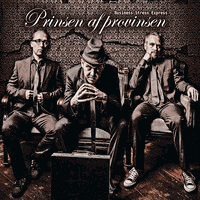

Business Stress Express - Prinsen Af Provinsen (Album, 2013)
01 - En Vej Frem (3:21)
02 - Prinsen Af Provinsen (2:44)
03 - Sent Hjem Fra Job (3:39)
04 - Farlige Piger (4:22)
05 - Historien Om En Dreng (3:36)
06 - Skål (1:43)
07 - Sexistisk Cirkus (3:27)
08 - Groupie (3:42)
09 - Slap Af (2:32)
10 - En Skippers Skræk (4:21)
11 - Mission Fuldført (2:56)
12 - Små Problemer (3:10)
13 - Sort Som Kul (3:17)
14 - Sommer I Danmark (3:36)
15 - Sex, Bugs & Rock 'N' Roll (3:17)
16 - Business Street Express (4:02)
© Trechoma Records :: [TRACD-010-13]
Notes
Review
335/366 (Project 366)
Today a band from Denmark. Alternative Rock'n'Roll with a Modern flavour of smoke-filled Schlager Rockabilly. A little schizo mood in the arrangements. This adds a special feeling to the sound of the vocals, which in itself are very peculiar. Hoarse, raucous, besotted, soused and ruffianly in a way. The songs are quite original and share a common style, although each has its own flavor and groove. Some try to be leisurely, appropriate for evening gatherings in some type of places, more conversational, and some are just a powerful stream of eccentricity. Perhaps an alternative vintage with a rather creepy vibe, where the use of dansk creates an even more interesting understanding. A significant part of the album is full of somewhat strolling and strut themes. And a feature is also a cool approach, where each instrument has the opportunity to show itself in a vivid way and take the first role in the action at some point.